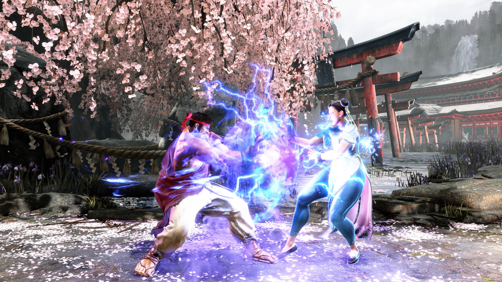
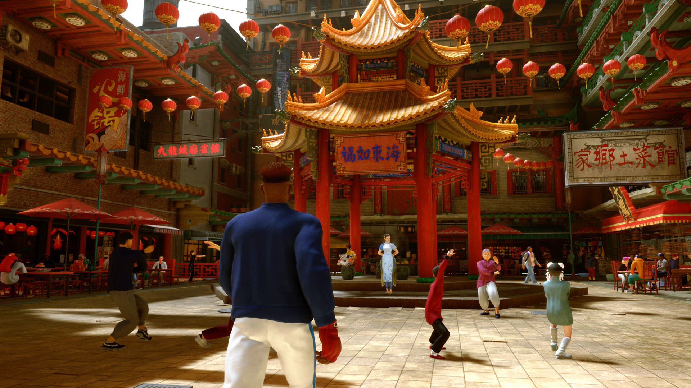

01
WHY IT SLAPS
核心亮点
先不吹情怀，直接聊它为什么好玩。
DRIVE SYSTEM
六格斗气，承包了整局的心理博弈
《街霸6》的 Drive 系统就是整套战斗的发动机。开局直接塞满六格，看着像厂家送温暖，实际是在问你： 这六格准备拿来打人，还是拿来给自己办破产手续？
格挡、Drive Rush、Drive Impact、OD 必杀和 Drive Reversal 共用这条资源。梭哈很爽，用空进入 Burnout（力竭）后，防守压力会陡增；靠墙再吃一发 DI，恭喜解锁“站着挨打”体验券。
敢花资源的人很凶，会算资源的人才真的难打。

MODERN CONTROLS
现代模式不是宝宝巴士，是一条正经的入坑路线
传统模式保留完整搓招和更多普通技；现代模式简化输入，让新手能更快用出升龙、必杀和超必杀。快捷输入通常有伤害修正，部分招式与路线也会少一些，代价摆在桌面上。
| 维度 | 现代模式 | 经典模式 |
|---|---|---|
| 上手 | 快，先学博弈 | 慢，要练输入 |
| 招式 | 部分精简 | 完整工具箱 |
| 收益 | 稳定反应、快速开打 | 路线自由、上限完整 |
| 该学的 | 立回 / 对空 / 确认 / 确反 / 拆投，一个都跑不了 | |
它不负责替你赢，只是把“我搓不出升龙”改成“我升龙打空，被对面一套抬走”。至少这次，你死得明白。 🎮
HIT FEEDBACK
打击感是真的顶，但爽点不靠播片糊弄
重拳命中的顿帧、打康时的音效、超必杀的镜头调度，全都踩在“这一下真疼”的点上。Drive Impact 反击时颜料炸开，画面“砰”一下糊到对手脸上，像在网吧成功抓到朋友裸放大。
更妙的是它不是无脑核按钮：会被反 DI、投技、多段技和跳跃处理。低分段人人拍桌，高分段人人等你拍桌。 同一套机制从新手村用到高手局，这个设计确实有东西。
ONLINE & LAB
联机终于不像在水下打太极
回滚网络码配合跨平台联机，正常线路下的手感属于格斗游戏第一梯队。排位还按角色分别计算段位，练副角色不用拿主力段位祭天，对“本命每周换一次”的玩家相当友好。
- 训练：帧数表、输入记录、防守与起身行为、连段试炼
- 学习：角色指南会告诉你招式是干什么的，不只叫你照着按
- 复盘：录像与对局工具够细，抓空挥、漏确反一查一个准
输了别急着说对面角色轮椅，先看录像。多数时候你会发现，真正坐轮椅的是自己的对空。

THREE WAYS TO PLAY
内容够多，但主菜永远是玩家对战
街机、训练、连段挑战、常规对战。真·正餐区。
捏人、跑图、升级、拜师。完全新人也能边玩边学。
线上街机厅，围观约战，也能欣赏两米八细腿捏人。
World Tour 会用任务慢慢教投技、取消和对空，不会开局把帧表拍你脸上。但要问它能不能单独值回票价，我的答案是：勉强，不是最佳吃法。